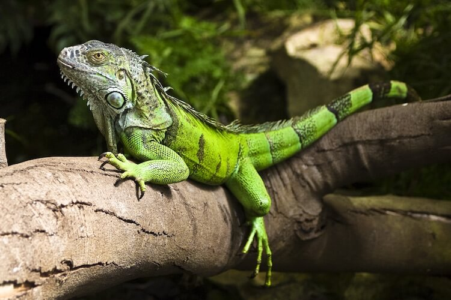
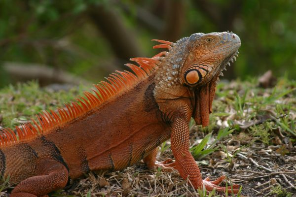
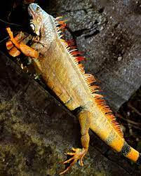

Take a look at the habitats that green iguanas thrive in: Central America, South America, Caribbean islands, and now South Florida. What do these places have in common? They are very, very warm and enjoy sunny days year-round. Iguanas need high temperatures to survive. That’s why iguana populations are not very large in central and northern Florida. It just doesn’t get hot enough. In the Miami area, as well as in the Keys, the weather is perfect for iguanas. They also need direct sunlight in order to survive. That is why you often find them out basking in the sun.
Iguanas are reptiles which means they do very well in water. They are excellent swimmers. They can swim in both saltwater and freshwater. And if the water temperature is right, they can hold their breath for up to 15 minutes.
Iguanas are herbivorous, meaning they eat plants; specifically, they are folivores, meaning they eat leaves. In the wild, iguanas feed almost entirely on the leaves of trees and vines, plus some fruits and flowers.
Hatchling and young iguanas should be fed at least two times a day. Once the iguana is over 2 feet long, feedings can be done once daily. When the iguana has reached adulthood and maximum length, you can reduce feedings to every other day. Every iguana is different and may require more or less food.
Gestation period of animal Incubation lasts from 90 to 120 days. Temperature should range from 85 to 91 degrees Fahrenheit. The hatchlings pip the egg open using a special egg tooth, called the caruncle, that falls off shortly after hatching. Absorbed yolk provides most of the nourishment for the first week or two of an iguana's life. How many offspring does it typically have The group of eggs that a female green iguana lays at one time is called a clutch. Each clutch they produce can hold between 20 and 71 eggs, with the average typically being around 40. How long do they stay with their parents They stay together during the first year of their life in family groups which offer protection against predators. Average lifespan of iguana is around 20 years in the wild.